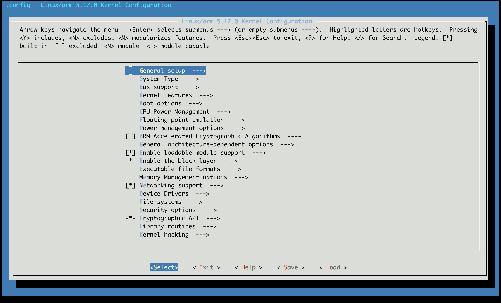

Linux Kernel
5.1 Linux 简介
Linux是一种自由和开放源码的类UNIX操作系统。该操作系统的内核由林纳斯·托瓦兹在1991年10月5日首次发布，在加上用户空间的应用程序之后，成为Linux操作系统。
Linux也是自由软件和开放源代码软件发展中最著名的例子。只要遵循GNU 通用公共许可证（GPL），任何个人和机构都可以自由地使用Linux的所有底层源代码，也可以自由地修改和再发布。大多数Linux系统还包括像提供GUI的X Window之类的程序。除了一部分专家之外，大多数人都是直接使用Linux 发行版，而不是自己选择每一样组件或自行设置.
Linux最初是作为支持英特尔x86架构的个人电脑的一个自由操作系统。目前Linux已经被移植到更多的计算机硬件平台，远远超出其他任何操作系统。Linux可以运行在服务器和其他大型平台之上，如大型计算机和超级计算机。世界上500个最快的超级计算机已100％运行Linux发行版或变种。Linux也广泛应用在嵌入式系统上，如手机（Mobile Phone）、平板电脑（Tablet）、路由器（Router）、电视（TV）和电子游戏机等。在移动设备上广泛使用的Android操作系统就是创建在Linux内核之上。
5.2 Linux 目录结构
| 目录 | 描述 | 存放功能 |
|---|---|---|
| arch | 即architecture,意为架构的意思, 常见的一些架构有mips、x86、arm。 适配一款芯片的linux内核，首先需要知道芯片属于什么架构 | dts、内存管理，系统调用，动态调频，主频率设置、库文件等 |
| block | block，意为块，与块设备相关的功能，如SD卡、iNand、Nand、硬盘等块设备相关的操作 | 块设备相关代码 |
| crypto | encryption，与加密相关的功能，如md5、sha1、 hash等 | 各类加密算法相关的功能代码 |
| Documentation | linux内核各类机制相关的文档，全英文，可以查阅各类机制的实现说明 | 官方文档 |
| drivers | 驱动，linux的驱动代码， 如GPIO、网络、usb、蓝牙等驱动源码，一般做开发都需要修改或添加该目录下的文件 | 驱动源码相关 |
| frimware | 存放一些固件代码(.bin) | |
| fs | 即files system，文件系统， 如ext2-4、jffs2、nfs、squashfs、ramfs、romfs等文件系统的实现代码 | 文件系统相关源码 |
| include | linux库文件的头文件，如fs.h、mdio.h、mm.h等， include/linux存放与平台无关的功能的头文件 | linux内核功能相关的头文件 |
| init | initialization ，初始化相关源码，main.c也在其中 | linux初始化相关 |
| ipc | Inter-Process Communication，进程间通信， 如共享内存、信号量、消息队列等 | 进程间通信相关代码 |
| kernel | 内核，linux内核相关的功能实现源码，如panic、pid、module、irq、cpu相关 | 内核功能源码 |
| lib | library， 实现一些库功能，如decompress、crc32、atomic等 | 库功能实现源码 |
| mm | memory management，内存管理相关功能实现 ，mmap、page、mempool等 | 内存管理相关源码 |
| netnetwork | 网络功能相关的源码，如tcp/ip、dns、ipv4/v6、802.11、ethernet等 | 网络协议功能 |
| samples | 一些linux功能代码使用的标准实例 | 示例参考代码 |
| scripts | 与内核无关的脚本代码，如内核编译相关、menuconfig相关 | 内核无关的脚本 |
| security | SELinux的模块。安全相关 | 安全相关代码，具体未知 |
| sound | 声卡与声音驱动相关代码，包含i2c、spi、usb等接口 | 音频功能实现代码 |
| tools | 与c编译、链接生成一个完整内核镜像相关的工具 | 编译相关 |
| virt | 虚拟化相关的代码，允许搭建虚拟机环境，运行多个系统 | 虚拟化相关代码实现 |
5.3 linux 配置相关
在Buildroot根目录下输入
make linux-menuconfig
